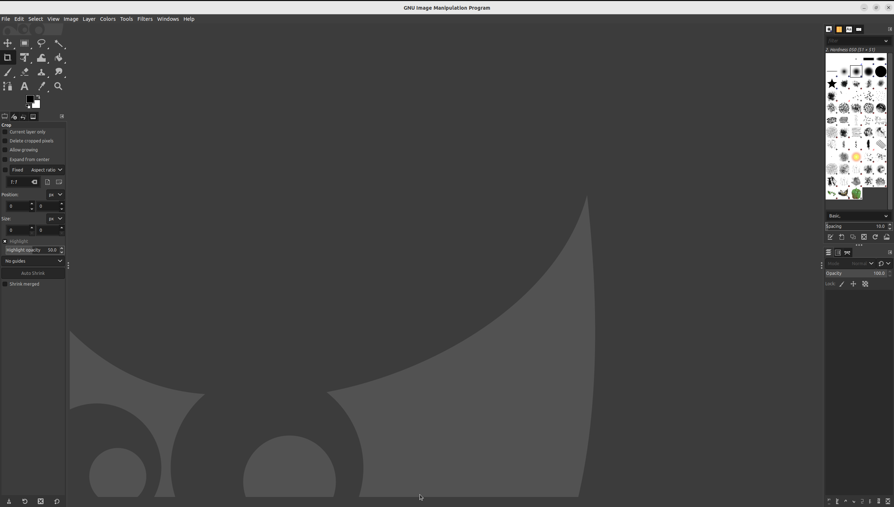
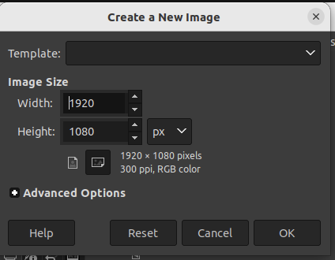
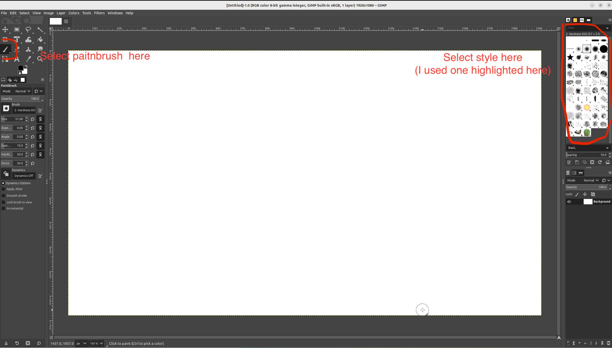
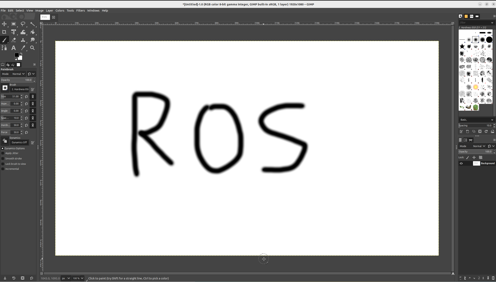
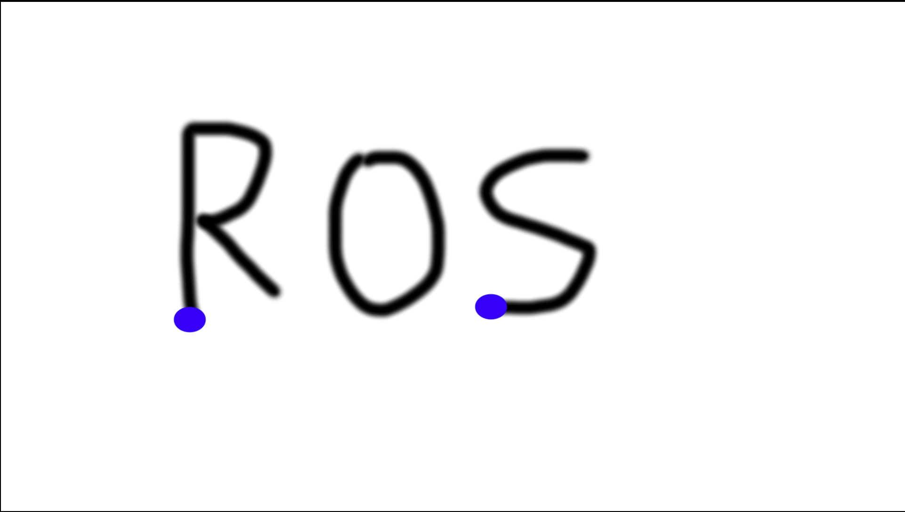
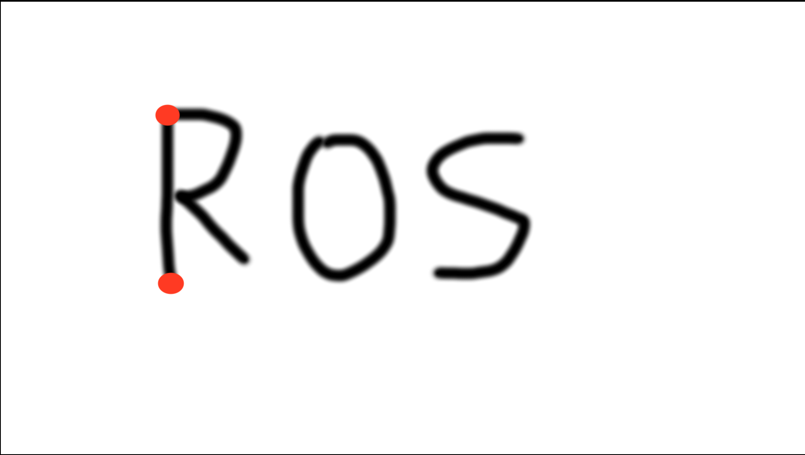
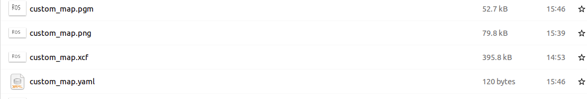

Maps creations
In the previous part of this tutorial you have been shown how to use existing map of an environment and how to create one by driving around in simulated world. Here we will show you how to create and import map into gazebo from nothing.
This skill is useful for example if you want to quickly test your robot in a new map or you collected LIDAR scan of real environment and you want to have in your Gazebo for testing.
Generally there are few ways you can go about it
Model your environment as .sdf
Model your environment in design software (such as solidworks) and export it as .stl file
Draw (or collected using real robot) your maps as .pgm, create assosciated .yaml file and convert those to .stl file.
In SfR module only third method is explored. In this method following steps are necessary
Draw your map as .png in your favourite image creation tool (here GIMP will be used)
Create assosciated .yaml and .pgm file (this can be done automatically using Python script)
Create map .stl file using map2gazebo package
Import into gazebo
Drawing the map
If you look inside .pgm file you will observe it is simply greyscale image with empty spaces represented by white colour and occupied by black colour (for the sake of simplicty we will ignore unknown spaces, you are not required to know how to deal with those).
We can easily create such a picture using any graphical editing software. Here we will use GIMP. You can install GIMP by running:
Start gimp and you should see:
{kind=link}
click file > new You should see:
{kind=link}
just click ok to accept the default settings. You can now draw a simple map using paintbrush tool as highlighted in picture below.
{kind=link}
Just write ROS using paintbrush like so:
{kind=link}
The particular size does not matter as long as all the letters are clearly visible. The scale and dimensions will be dealt with in the next step. Click file > save and save it in .../example_gz_robot/world/ as custom_map.xcf. We also need to export to .png. to do this click file > export, Change file extension to .png like so:
{kind=link}
Click export then export again in the pop-up window. This completes step 1.
Create .yaml and .pgm file
the .YAML file contains information which allows determination of size of the map (i.e. length of each pixel), while .pgm is ROS acceptable format for maps. While we could do it manually it is a lot more convinent to do so using a script. Please download script (this script was originally part of ROS-Map-Generator , It was modified here to to work with Python3) and put it in .../example_gz_robot/world/ directory. Open terminal in .../example_gz_robot/world/ folder and type:
If you get any error run following python installation commands: .. code-block:: console
pip3 install trimesh pip3 install numpy pip3 install pycollada pip3 install scipy pip3 install networkx pip3 install opencv-contrib-python
This will open interactive command-line tool where you have to type the following:
and press Enter
Now we have to select two x-coordinates and two Y coordinates for package to measure dimension. For x coordinate we want to select bottom of letter ‘R’ and ‘S’ as highlighted in picture below with red dots.
{kind=link}
This does not have to be exact right. Once two x-coordinates are selected you should type
4
and press Enter
To indicate we want this distance to be 4 meters. then to indicate Y-coordinates top and bottom of R should be marked as outlined below.
{kind=link}
We also type:
4
and press Enter. then for question about the new name we just type:
custom_map
and press Enter twice. We should know see in Nautilus two new files being added, custom_map.pgm and custom_map.yaml, both needed by ROS.
{kind=link}
Create .stl file
Now that we have map file we can use in map server, we also need to create assosciated .stl file for usage in Gazebo. STL files are 3D graphical files (you can find more info here). So far we have 2D map only, we will create 3D equivalent by simply extruding walls from exisitng map. To do so we will use map2gazebo repository. To install follow the installation instruction from the repository. After installation we will be using offline instructions. Thus open new terminal in .../example_gz_robot/world/ folder and type in:
This should create custom_map.stl file which we can use in gazebo
Importing into Gazebo
To import into gazebo, first copy custom_map.stl into meshes folder (just to keep your folder clean). Then, we need .sdf file. Download .sdf file from here (this is slightly modified sdf file from map2gazebo repository) and put it inside worlds folder. In essence this file tells gazebo where to look for STL file as well as some basic properties of it. Look inside sdf file, in the lines outlined below we defined the name of our custom stl file:
20 <uri>model://custom_map.stl</uri>
This is simple modification of Launch file ``simulation_bringup.launch.py``in line 41.
1 sdf_path = os.path.join(get_package_share_directory('example_gz_robot'), 'worlds', 'tb3.sdf')
with
sdf_path = os.path.join(get_package_share_directory('example_gz_robot'), 'worlds', 'model.sdf')
This just tells launch file to look for new sdf file. Now you can fully use your new map. Launch the SLAM like before:
source ~/<YOUR_ROS_WS>/install/setup.bash
ros2 launch example_gz_robot slam.launch.py
You should see your new map in Gazebo and laser scan in RVIZ. Drive the robot around to complete the map in RVIZ.